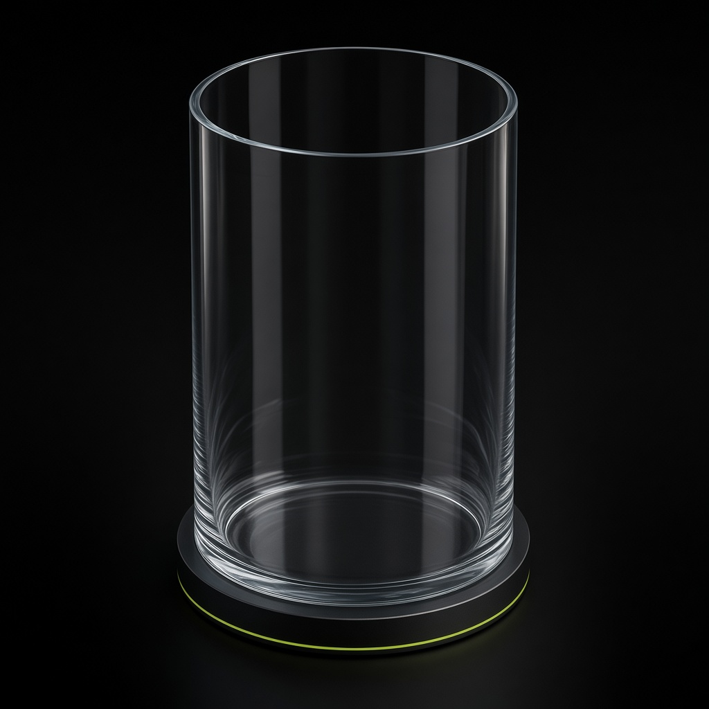
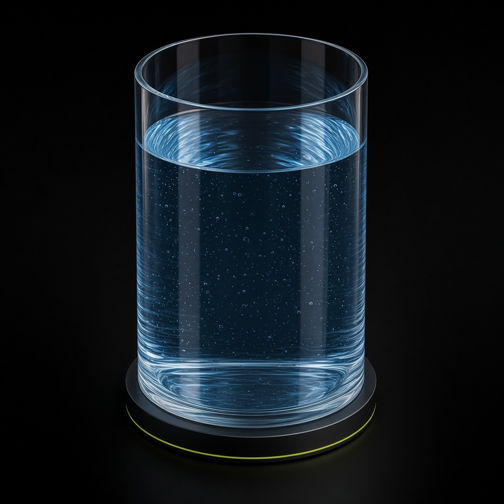

ÁGUA
O vidro, a borda e a base vêm do copo vazio. A água azul e o menisco vêm do copo cheio, sem esticar o vidro. Os extremos são os assets originais. Alinhamento conferido: as bordas coincidem, sem deslocar a câmera.


Estudo isolado. Mesma lógica dias/duração. Não entra no ranking e não publica.
O vidro, a borda e a base vêm do copo vazio. A água azul e o menisco vêm do copo cheio, sem esticar o vidro. Os extremos são os assets originais. Alinhamento conferido: as bordas coincidem, sem deslocar a câmera.

